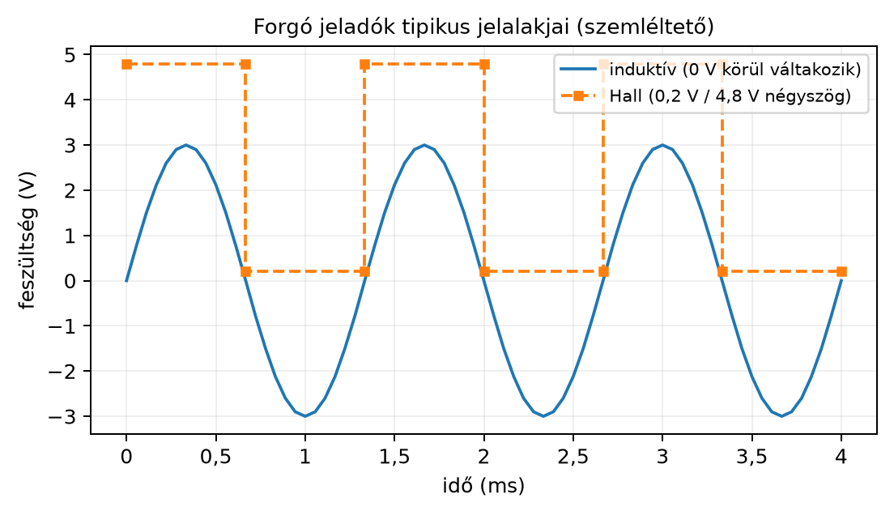

Motiváció: egy autó hidegindítás után rángat, a motor sárga ellenőrző lámpája világít, a rendszerteszter hibakódot mutat a hűtőfolyadék-hőmérséklet-jeladó körében. A hibakód azonban csak irányt ad: nem mondja meg, hogy a jeladó, a vezeték, a csatlakozó vagy a motorvezérlő egység hibás. A jeladók és beavatkozók vizsgálata éppen ezért nem merül ki a hibakód kiolvasásában; a javítónak multiméterrel és oszcilloszkóppal kell eldöntenie, hol szakadt meg a mérési lánc. Ebben az alfejezetben a gyakorlatban leggyakrabban vizsgált érzékelők és beavatkozók ellenőrzési sorrendjét tanuljuk meg, az Érzékelők és jeladók alfejezetben megismert bekötési logikára és a Beavatkozók: injektorok, gyújtótekercsek, fojtószelep, alapjárat-szabályozó, EGR-szelep alfejezetben bemutatott beavatkozói működésre építve.
Képzeljünk el egy főtengely-jeladó mérési elrendezést. Az oszcilloszkóp egyik csatornája az induktív jeladó két kapcsát méri, a másik egy aktív Hall-jeladó jelvezetékét. A képernyőn az induktív jeladó fordulatszámmal növekvő amplitúdójú, váltakozó szinuszszerű jelet ad, a Hall-jeladó pedig rögzített amplitúdójú, éles négyszögjelet. A gyakorlott szerelő nemcsak azt nézi, hogy van-e valamilyen jel, hanem azt is, hogy a jelalak alakja, amplitúdója, frekvenciája és alapvonala megfelel-e a gyártói javítási adatnak.

A grafikonon a 0 V körül, pozitív és negatív félhullámmal váltakozó görbe az induktív jeladóé, a 0,2 és 4,8 V között ugráló négyszögjel az aktív Hall-jeladóé. Az induktív jel a fordulatszámmal együtt növekvő amplitúdójú, a Hall-jel feszültségszintje közel állandó. A jelalakok valós értékei típusonként eltérnek, ezért minden döntésnél a gyártói adat az elsődleges.
Definíció: a jeladó-vizsgálat három pontja. Egy motorirányítási érzékelő leggyakrabban három villamos ponttal kapcsolódik a vezérlőegységhez: tápfeszültség, test és jel. A vizsgálat során ezt a három pontot mindig ebben a sorrendben ellenőrizzük, mert a bemenő teljesítmény nélküli jel hamis diagnózishoz vezet.
A három pont szerepe:
5 V vagy 12 V a jeladó csatlakozóján, gyújtás
bekapcsolt állapotában.Szabály: mérési sorrend táp, test, jel után. Először
a csatlakozó bekötött állapotában, lehetőség szerint a csatlakozó
hátoldalán bevezetett mérőtűvel vagy mérőadapterrel (kitörőboxszal)
mérjük a tápfeszültséget a jeladó tápfeszültség-kapcsa és az akkumulátor
negatív pólusa között. Ezután a jeladó testkapcsa és az akkumulátor
negatív pólusa közötti feszültségesést mérjük. Ez jó esetben 0,1 V-nál
kisebb (ellenőrizendő: gyártói adat). Végül a jelkapcsot mérjük
oszcilloszkóppal vagy multiméterrel. A vezeték szigetelését csak akkor
szúrjuk át, ha a gyártó megengedi; a szúrás helyét utána szigetelni
kell, mert az átszúrt szigetelésen nedvesség jut a vezetékbe, ami később
korróziót és átmeneti ellenállást okoz
(ellenőrizendő: gyártói utasítás).
Definíció: terheléses mérés. A feszültséget nem elegendő szabadon lógó, üresjárásban lévő csatlakozón mérni, mert a szakadozott, korrodált vezeték kis mérőáram mellett szépen mutatja a feszültséget, de terhelésre letörik. Ezért a mérést bekötött, működő rendszerben, indítás vagy járatás közben, illetve ismert terhelő ellenállással végezzük. Például egy 5 V referenciafeszültséget az ECU-ról leválasztva, terhelő ellenállással ellenőrizve a feszültség nem eshet 4,8 V alá (ellenőrizendő: gyártói adat).
A főtengely-, vezérműtengely- és kerékfordulatszám-jeladók leggyakrabban induktív vagy Hall-elvű érzékelők. Az induktív jeladó passzív: nincs tápfeszültsége, két vezetéke van, és a fogaskerék elhaladásakor váltakozó feszültséget generál. A Hall-jeladó aktív: jellemzően három vezetéke van, tápfeszültséget igényel, és négyszögjelet ad.
Gyakorlati ellenőrzés:
Számítás: jel frekvenciája. A fordulatszám- és kerékfordulatszám-jeladóknál a jel frekvenciáját a fordulatszám és a jelet adó fogaskerék fogszáma határozza meg:
ahol n a fordulatszám (1/min), z a
fogaskerék fogszáma.
Kidolgozott példa. Egy kerékfordulatszám-jeladó 48 fogú fogaskerékkel dolgozik, a kerék 1000 1/min fordulatszámmal forog.
n = 1000 1/min, z = 48.f = (n/60)·z.f = (1000/60)·48 = 16,67·48 = 800 Hz.A fojtószelep-potenciométer a szívócsőbe jutó levegő fojtószelepállását, a gázpedál-érzékelő a vezető pedál szándékát jelzi. Mindkettő jellemzően 5 V referenciafeszültségről dolgozik, és egy vagy két egymástól eltérő jelkimenetet ad. A redundancia a biztonságot szolgálja: ha az egyik jel hibás, az ECU hibakódot tárol, és a motor biztonsági üzemmódba kapcsol.
Ellenőrzés multiméterrel:
Oszcilloszkópos vizsgálat. A pedál lassú, egyenletes lenyomásakor a jel nem ugorhat, nem lehet rajta tüske vagy ellenállás-törésből adódó szakadás. A hirtelen, rossz érintkezésből adódó letörések a csúszópálya kopását jelzik.
A hűtőfolyadék- és beszívott levegőhőmérséklet-érzékelő leggyakrabban NTC-ellenállás. Az NTC jellemzője, hogy melegedéskor az ellenállása csökken. A vezérlőegység egy belső vagy külső húzóellenállással feszültségosztót alkot, és a jel feszültségét méri:
ahol U_ref a referenciafeszültség, R_1 a
sorbakötött húzóellenállás.
Kidolgozott ellenőrzési példa. Egy hűtőfolyadék-hőmérséklet-érzékelőt 5 V referenciafeszültségű osztóban 1 kΩ-os húzóellenállással kötnek be. Hidegen az NTC ellenállása 2,5 kΩ.
U_ref = 5,0 V, R_1 = 1,0 kΩ,
R_NTC = 2,5 kΩ.U_j = U_ref · R_NTC / (R_1 + R_NTC).U_j = 5,0 · 2,5 / (1,0 + 2,5) = 5,0 · 2,5 / 3,5 = 3,57 V.Gyakorlatban a csatlakozó lehúzása után multiméterrel az NTC ellenállását mérjük adott hőmérsékleten, és a mért értéket a gyártói hőmérséklet–ellenállás táblázattal vetjük össze. Bekötött állapotban a jel feszültségét ellenőrizzük. Ha a jel közel 5 V, az NTC szakadt vagy a testvezeték sérült; ha közel 0 V, a jelvezeték testzárlatos vagy az NTC rövidzárlatos.
A hidegindítási gazdagítás és a ventilátorvezérlés is ezen az érzékelőn alapul, ezért a téves hőmérséklet-érték hidegindítási nehézséget, rossz alapjáratot vagy magas fogyasztást okoz.
A szívócsőnyomás-érzékelő (MAP) a szívócső abszolút nyomását méri, a légtömegmérő (HFM/MAF) a beszívott levegő tényleges tömegét. A MAP-jeladó 5 V referenciafeszültségről dolgozik, és az abszolút nyomással arányos feszültségjelet ad. A HFM hőfilmes mérőeleme gyorsan érzékeli a légáramlás hűtő hatását, és a gyártótól függően feszültségjelet vagy frekvenciát szolgáltat.
Ellenőrzés:
A kopogásérzékelő piezo-elvű rezgésérzékelő, amely a gépjármű motorblokkján érzékeli a kopogási frekvenciát. A jel feszültsége kicsi, sávszűrt, ezért multiméterrel nem értékelhető megbízhatóan; oszcilloszkóppal viszont a kopogási tüskék megjelenése figyelhető meg. A gyakorlatban a kopogásérzékelő ellenőrzése két módon történik: a rendszerteszter élő adatában kopogásjelenségkor növekszik a kopogási jel, illetve oszcilloszkóppal a motorblokk megkocogtatásakor rövid, csillapodó tüskék jelennek meg. A kopogásérzékelő rögzítőcsavarját a gyártó által előírt nyomatékkal kell meghúzni, mert a hibás nyomaték megváltoztatja a jel amplitúdóját.
A lambdaszonda a kipufogógáz oxigéntartalmát jelzi. A hagyományos ugrószonda feszültségjele szegény keveréknél alacsony (kb. 0,1 V), dús keveréknél magas (kb. 0,8–0,9 V), és a szabályozott üzemben néhányszor másodpercenként vált (ellenőrizendő: gyártói adat). A szélessávú lambdaszonda áramjelet ad, amelyet a vezérlőegység értékel ki.
Diagnosztikai lépések:
A befecskendezőszelep mágnesszelep, amely a vezérlőegység által
kapcsolt árammal nyit. Vizsgálata során először feszültségmentes,
lehúzott csatlakozónál mérjük a tekercs ellenállását. A nagy
impedanciájú injektor ellenállása 11–16 Ω, a kis impedanciájú injektoré
néhány ohm között lehet (ellenőrizendő: gyártói adat). A vezérlőjelet
bekötött csatlakozón járatott motornál oszcilloszkóppal mérjük.
Testoldalon kapcsolt injektornál a vezérlőkapocs feszültsége a nyitás
idejére közel 0 V-ra esik; a zárás pillanatában rövid, kb. 40–80 V-os
induktív tüske jelenik meg (ellenőrizendő: gyártói adat).
Peak-and-hold vezérlésnél az áramjelen egy nagyobb nyitóáram, majd
kisebb tartóáram látszik. A vezérlési időt (ms) az oszcilloszkópon a 0
V-os szakasz hossza adja, és ez összevethető a rendszerteszter élő
adatával.
Az alapjárat-szabályozó lehet léptetőmotoros vagy PWM-vezérelt forgócsapos szelep. Az ellenőrzés első lépése a tekercsek ellenállásmérése a gyártói értékekkel összevetve. A PWM-vezérelt elemnél oszcilloszkóppal a kitöltési tényezőt mérhetjük:
ahol t_be a bekapcsolt idő, T a
periódusidő. A szelep akkor jó, ha a kitöltési tényező változik a
terhelés és a fordulatszám függvényében. Az EGR-, EVAP-,
turbó-szabályozó és termosztát-beavatkozók vizsgálata hasonló elvű:
először ellenállásmérés, majd aktív teszt a rendszerteszterrel, végül
oszcilloszkópos jelvizsgálat.
A motorvezérlő egységet közvetlenül, ellenállásmérővel mérni tilos, mert a mérőáram a bemeneti/kimeneti fokozatokat károsíthatja. Az ECU-t mindig közvetetten, a táp-, test- és jelvezetékek ellenőrzésével vizsgáljuk. Ha minden bemeneti jel és beavatkozói vezeték rendben van, az ECU mégis hibásan működik, a gyártói diagnosztikai eljárás szerint a vezérlőegység csereprogramja következik. A vizsgálat során kitörőboxot, oszcilloszkópot és rendszertesztert használunk; a feszültségméréseket a megfelelő mérési kategóriájú (jellemzően CAT III, ellenőrizendő) műszerrel végezzük.
A mérési lánc minden elemét a gyártói javítási adattal, vagy annak hiányában a rendszerteszter által mutatott elvárható értékkel hasonlítjuk össze.
Ellenőrzőlista jeladóvizsgálathoz:
Az ügyfél azt panaszolja, hogy hidegen nehezen indul az autó, melegen is dús, kormos a kipufogó, és magas a fogyasztás. A rendszerteszter P0115 jellegű hibakódot mutat (példakód, ellenőrizendő). A hibafeltételezés az, hogy az NTC hűtőfolyadék-hőmérséklet-jeladó vagy annak vezetéke nem a tényleges hőmérsékletet jelzi, ezért az ECU a valósnál jóval hidegebb motort (vagy szakadt kört) érzékel, és túldúsít.
Mérési lépések:
Tanulság: a hibakód irányt ad, de a döntő a mért fizikai érték összevetése a gyártói adattal.
Cél: aktív főtengely-jeladó és NTC-hőmérséklet-érzékelő állapotának megállapítása multiméterrel és oszcilloszkóppal.
Jármű- és adatazonosítás: rendszám, alvázszám, motorkód, gyártói kapcsolási rajz beszerzése (ellenőrizendő: gyártói adat).
Szükséges eszközök: CAT III multiméter, oszcilloszkóp, hátoldali mérőtűk és mérőadapter (kitörőbox), csatlakozó- és vezetékvizsgáló készlet, munkalap, gyártói hibakeresési folyamatábra.
Anyagok: elektromos érintkezőtisztító, vezeték-javító anyagok a gyártói előírás szerint.
Biztonsági korlát. A feladat tanműhelyi környezetre, oktató felügyeletére és a gyártói javítási utasítás betartására vonatkozik; a megadott értékek tanulási példák.
Munkabiztonsági és környezetvédelmi lépések: a gyújtás kikapcsolása, az akkumulátor lekötésének szükség szerinti gyártói eljárása, a munkaterület tiszta, száraz felülete, a sérült vezetékek hulladékkezelése. Elektromos mérésnél tilos a vezérlőegység kapcsaira ellenállásmérővel mérni.
Figyelem – mérés a csatlakozón. Az ábra szerint helyes a vékony hátoldali mérőtű a vezetéktömítés mellett (1) vagy a mérőadapter, „Y” mérőkábel (2). Hibás a vastag mérőcsúcs elölről a hüvelybe (3), mert szétfeszíti az érintkezőt; a vezeték szigetelésének átszúrása (4) nedvességet enged a rézbe, ezért csak kivételesen, a gyártó engedélyével és utólagos tömítéssel alkalmazható – a 3. lépés „átszúrható tűje” ezt a kockázatot hordozza.
Munkalépések:
Tipikus hibák a munkában:
A mérési sorrend megfordítása. Ha először a jelet mérik, és a jel hibás, de a tápfeszültség vagy a test is hibás, félrevezető következtetést vonnak le. A helyes sorrend: táp, test, jel.
A jelvezetéket ellenállásmérővel mérik bekötött ECU mellett. Ez a vezérlőegység bemeneti fokozatát károsíthatja. A jelvezetéket csak feszültségmentes, lehúzott ECU és érzékelő mellett szabad ellenállással mérni, vagy a gyártói előírás szerint.
A jelet terheletlen, szabad csatlakozón mérik. A szakadozott vezeték üresjárásban szépen mutatja a feszültséget, de a gyenge érintkezés terhelés alatt letörik. A mérésnek a működő rendszerben, átszúrt tűvel kell történnie.
A kopogásérzékelőt multiméterrel próbálják ellenőrizni. A piezo-jel millivoltos, tüskeszerű; a multiméteres mérés nem ad használható képet. A kopogásérzékelő vizsgálata oszcilloszkóppal és rendszerteszteres élő adatokkal történik.
A lambdaszonda fűtését és jelét nem választják szét. A fűtéskör szakadása miatt a szonda hideg marad, a jel lassú, de a jelvezeték önmagában jónak tűnhet. Mindkét kört külön kell mérni.
1. kérdés. Igaz-e, hogy egy induktív főtengely-jeladó 5 V tápfeszültséget igényel? Indokold.
2. kérdés. Miért kell a jeladó testkapcsát terhelés alatt mérni?
3. kérdés. Egy 60 fogú főtengely-fogaskerék 800 1/min fordulatszámon forog. Mekkora a jel frekvenciája?
4. kérdés. Az NTC hűtőfolyadék-érzékelő jele közel 5 V. Mi a két legvalószínűbb hiba?
5. kérdés. Mi a helyes sorrend egy háromvezetékes aktív jeladó vizsgálatánál?
1. kérdés. Hamis. Az induktív jeladó passzív, saját maga generál váltakozó feszültséget, nincs szüksége tápfeszültségre; a Hall-jeladó aktív, az igényel tápfeszültséget.
2. kérdés. Mert a testvezeték szakadozott vagy korrodált állapotban üresjárásban 0 V-ot mutathat, de terhelés alatt feszültségesés jelenik meg rajta. A bekötött rendszerben, működés közbeni mérés mutatja meg a valódi állapotot.
3. kérdés.
f = n/60 · z = 800/60 · 60 = 800 Hz.
4. kérdés. Az NTC szakadt (az ellenállása nagyon nagy), vagy a testvezeték szakadt. A jel ilyenkor a referenciafeszültséghez közelít.
5. kérdés. Először a tápfeszültséget, második lépésként a testet, majd a jelet ellenőrizzük. A jelet oszcilloszkóppal, terhelés alatt is mérni kell.
1. feladat (A). Sorold fel a háromvezetékes aktív jeladó három villamos pontját, és írd le mindegyik funkcióját.
2. feladat (A). Egy főtengely-jeladó fogaskereke 60 fogú, a motor fordulatszáma 2400 1/min. Számítsd ki a jel frekvenciáját hertzben.
3. feladat (B). Egy NTC hőmérséklet-érzékelő húzóellenállása 1,5 kΩ, referenciafeszültsége 5 V. Hidegen az NTC ellenállása 4,5 kΩ. Mekkora a jelfeszültség hidegen? Meleg állapotban az NTC 0,5 kΩ-ra csökken. Mekkora a jelfeszültség melegen? Értelmezd a két értéket.
4. feladat (B). Rajzold le áramútrajz vázlatával egy Hall-jeladó bekötését: 5 V tápfeszültség, test, jel, vezérlőegység, mérési pontok. A rajzolás után írd le, melyik ponton mérnél oszcilloszkóppal, és milyen jelet várnál.
5. feladat (C). Egy technikus a fojtószelep-érzékelő jelvezetékét multiméterrel méri zárt fojtószelepnél, gyújtás bekapcsolt állapotában. A jel 4,9 V, de a tápfeszültség 5,1 V. A technikus szerint az érzékelő hibás. Mi lehet a helyes diagnózis? Milyen további mérést javasolsz?
6. feladat (D). Egy benzinmotoros autó hibakódja a légtömegmérő (HFM) körét jelzi. Az alábbi mérési eredményeket kapod: tápfeszültség 5 V, test 0,1 V, a jel oszcilloszkópon közel vízszintes vonal, csak nagy gázadásra mozdul kissé. Mit ellenőriznél először, és miért? Javasolj javítási lépést.
1. feladat megoldása. Tápfeszültség: az érzékelő működési energiáját adja, jellemzően 5 V vagy 12 V. Test: az áram visszavezetése a járműtest felé. Jel: a mért fizikai mennyiséget hordozó feszültség- vagy frekvenciajel, amit az ECU feldolgoz.
2. feladat megoldása. Adott:
n = 2400 1/min, z = 60. Keresett:
f.
f = n/60 · z = 2400/60 · 60 = 40 · 60 = 2400 Hz.
Ellenőrzés: 2400 1/min = 40 1/s, foganként egy jel: 40·60 = 2400 Hz.
3. feladat megoldása. Adott:
U_ref = 5 V, R_1 = 1,5 kΩ, hideg
R_NTC = 4,5 kΩ, meleg R_NTC = 0,5 kΩ. Képlet:
U_j = U_ref · R_NTC / (R_1 + R_NTC).
Hidegen:
U_j = 5 · 4,5 / (1,5 + 4,5) = 5 · 4,5 / 6 = 3,75 V.
Melegen:
U_j = 5 · 0,5 / (1,5 + 0,5) = 5 · 0,5 / 2 = 1,25 V.
Értelmezés: melegedéskor az NTC ellenállása csökken, ezért a jel feszültsége 3,75 V-ról 1,25 V-ra csökken. Ez az elvárható NTC-irány.
4. feladat megoldása. A rajzon a felső vezeték az 5 V tápfeszültség és a jel, az alsó a test. Az oszcilloszkópot a jel és a test közé kötjük. Motoros járatás közben négyszögjelet várunk, amelynek feszültségszintje 0,2–4,8 V között váltakozik (példaérték, ellenőrizendő: gyártói adat).
5. feladat megoldása. A technikus hibásan csak a jel feszültségét nézte. A jel 4,9 V, a táp 5,1 V, a különbség 0,2 V. Ez lehet érzékelőhiba, de lehet a jelvezeték szakadt vagy nagy ellenállású is. Zárt állásnál a 4,9 V a testkapocs szakadására vagy a jelvezeték 5 V-os zárlatára utal; mérjük a testkapocs feszültségesését. Javasolt mérés: a táp és a test a bekötött rendszerben, majd a jel terhelés alatt. Ha a jelvezetéknél üresjárásban 4,9 V, de bekötött ECU-nél a motor nem reagál, a vezeték ellenállását feszültségmentes állapotban mérni kell. A fojtószelep-érzékelőt a gyártói diagnosztikai folyamatábra szerint kell ellenőrizni.
6. feladat megoldása. A táp és a test rendben van, de a jel alig mozog, ami a légtömegmérő szennyezett vagy elakadt mérőelemére utal. Először a légtömegmérő hőmérsékleti és légtömeg-jelét kell élő adatban ellenőrizni, majd a szűrőt és a házat. A hibás légtömegmérőt tisztítani vagy gyártó szerint cserélni kell, majd a hibakódot törölni és a keverékszabályozást próbaúton ellenőrizni.
A jeladók és beavatkozók vizsgálatának alapelve az, hogy mindig meghatározott sorrendben, a táp-, test- és jelponton mérünk, lehetőleg terhelés alatt, hátoldali mérőtűvel vagy mérőadapterrel, a gyártói adattal összevetve. Az induktív jeladó passzív, váltakozó jelet ad; a Hall- és aktív érzékelők tápfeszültséget igényelnek, négyszögjelet adnak. Az NTC ellenállása melegedésre csökken, a jel feszültsége ezért csökken. A fojtószelep- és gázpedál-érzékelő 5 V referenciafeszültséggel dolgozik, a jelnek egyenletesen kell változnia. A HFM, a kopogásérzékelő és a lambdaszonda vizsgálatához oszcilloszkóp kell, mert a jel gyors vagy kicsi. A beavatkozók ellenállását először feszültségmentes állapotban mérjük, a vezérlőjelet oszcilloszkóppal és rendszerteszterrel ellenőrizzük. A motorvezérlő egységet közvetlenül ellenállásmérővel mérni tilos. Továbbvitt eredmény. Az itt kidolgozott mérési sorrendet és döntési logikát a Vezetékjavítás, csatlakozók, világítás, áramellátás és indítás szerelése alfejezetben az áramellátó és indítórendszer szerelésénél, valamint az Elektronikus rendszerek javítása: ABS/ESP, légzsák, komfort, klíma és ADAS alfejezetben a biztonsági és komfortrendszerek jeladóinak vizsgálatánál alkalmazzuk.
Az alfejezet az általános járművillamos méréstechnikai alapokra, a gyártói motorirányítási és diagnosztikai gyakorlatra, az MSZ EN 60617 villamos rajzjelekre, valamint az OBD/EOBD diagnosztikai protokollokra épül (ISO 15031, SAE J1962 – ellenőrizendő: hatályos változat). A konkrét táp- és jelfeszültség-értékek, ellenállás-határok, frekvenciák, csatlakozó-kiosztások és csavarónyomatékok gyártó- és típusfüggők, ezért azokat a gyártói javítási adatból kell ellenőrizni. Ellenőrizendő továbbá a mérőműszer CAT-besorolása, az NTC hőmérséklet-ellenállás táblázatai, valamint a lambdaszonda és a kopogásérzékelő pontos jelalak-adatai.